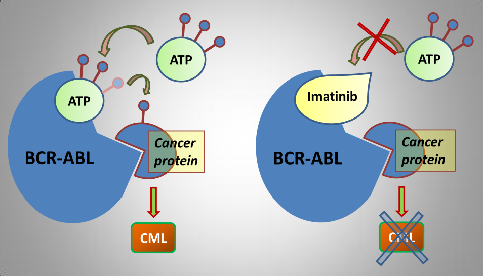

A comienzos del siglo XXI, apareció el primer tratamiento con blanco molecular: el inhibidor específico de la tirosin kinasa-Abl, cambiando drásticamente la evolución clínica de la LMC y mejorando la sobrevida de los pacientes, disminuyendo el número de transplantes alogénicos
